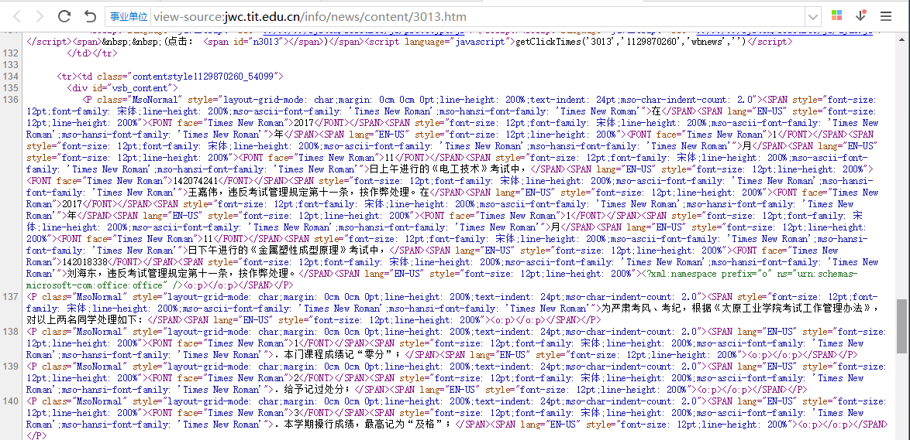
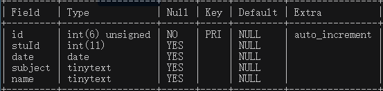
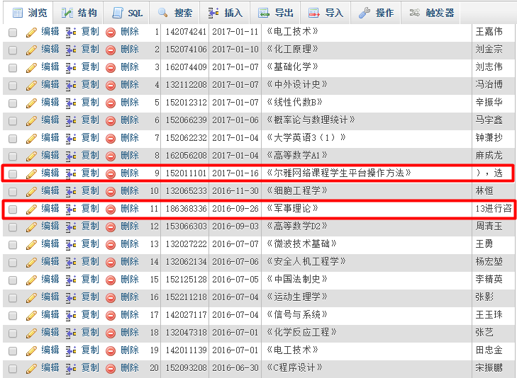
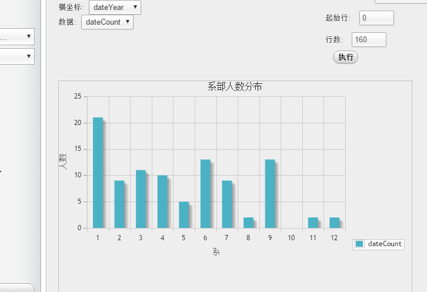
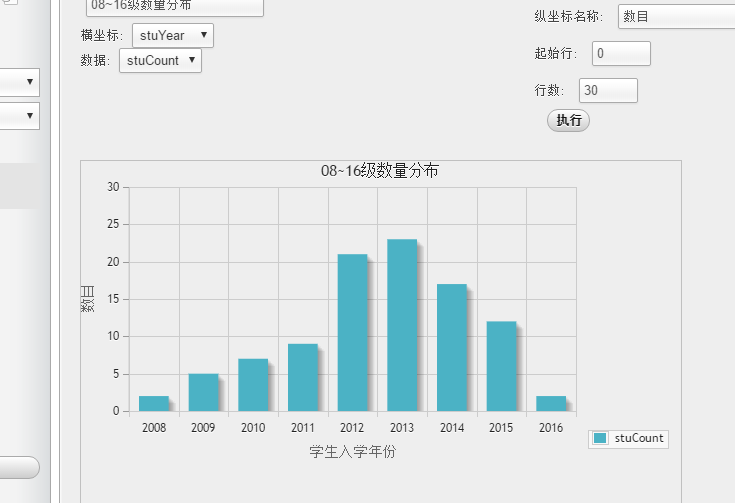
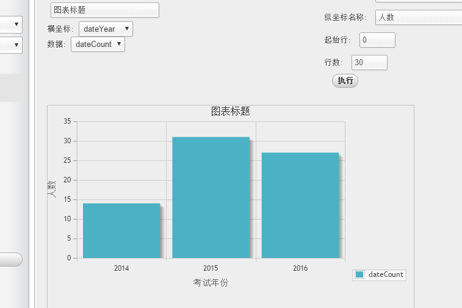

PHP写简单爬虫抓取太工教务处通告中的，考试作弊学生名单
目标是太原工业学院（tit）教务处（http://jwc.tit.edu.cn） 通告栏信息中考试作弊学生的名单。
过程中涉及到的内容有：
curl获取页面内容
正则表达式匹配目标内容
相关字符串处理函数整理数据
mysql数据库基本操作
首先打开教务处最新一条考试作弊通告，查看页面源代码，内容类似于：

可以获取到两个信息：
通告地址为：http://jwc.tit.edu.cn/info/news/content/3013.htm ，有很明显的规律
页面内容太乱了。
因为页面链接太有规律，我们可以用简单粗暴的方式来循环爬取各个页面，而不用分析页面中的链接然后执行另外的curl请求。
第二个信息是页面内容比较乱，主要是太多html标签+样式覆盖了内容。（吐槽一下教务处系统的开发者？）可以在得到页面内容后先过滤掉每个标签。
接下来开始写代码了。
一、curl请求一共需要四个步骤：
初始化会话请求
设置请求选项，包括具体的url
执行一个curl会话并且获得相关回复
释放curl句柄，关闭一个curl会话
涉及到的四个函数分别为：
curl_init(); curl_setopt(); curl_exec(); curl_close();
略过一些内容后就可以拿到以字符串形式返回的包含页面内容的变量$response。
二、然后写正则表达式结合一些函数来分离出所需信息，涉及到的函数有：
preg_replace();
好像就这一个，功能很强大。关于正则表达式可以用这个在线工具：http://regexpal.isbadguy.com/
三、再然后整理数据，也就使用这个函数：
substr();
以数组形式返回整齐的数据。
四、最后就要把数据储存到mysql，表的结构是：（资源小浪费）

基本步骤之后可以拿到包含一个页面所需数据的数组。最终执行需要重复执行这些基本步骤很多（3013）次。
过程中用ob缓存来实时输出内容反馈到浏览器：
ob_flush(); flush();
完整代码
<?php
set_time_limit(0); // 设置PHP最长执行时间
$times = 3013;
while($times > 0){
$url = "http://jwc.tit.edu.cn/info/news/content/".$times.".htm";
echo $url."<br />";
$res = curl($url);
if($res){
$data = getData($res);
if($data){
$data = infoArr($data);
saveData($data);
}
}else{
$times++;
}
ob_flush(); // 从缓存中输出内容
flush(); // 刷出缓存内容到浏览器
sleep(1); // 延时1s执行
$times--;
}
function curl($url = "http://www.baidu.com"){
// 1.初始化会话请求
$ch = curl_init();
// 2.设置请求选项，包括具体的url
curl_setopt($ch, CURLOPT_URL, $url); // 需要获取的 URL 地址，也可以在curl_init()初始化会话的时候
curl_setopt($ch, CURLOPT_RETURNTRANSFER, 1); // TRUE 将curl_exec()获取的信息以字符串返回，而不是直接输出
curl_setopt($ch, CURLOPT_HEADER, 0); // 启用时会将头文件的信息作为数据流输出（到页面）
curl_setopt($ch, CURLOPT_CONNECTTIMEOUT, 30); // 连接超时时长
curl_setopt($ch, CURLOPT_TIMEOUT, 30); // 执行超时时长
curl_setopt($ch, CURLOPT_HTTP_VERSION, CURL_HTTP_VERSION_1_0); //强制协议为1.0
curl_setopt($ch, CURLOPT_HTTPHEADER, array("Expect: ")); //头部要送出'Expect: '
curl_setopt($ch, CURLOPT_IPRESOLVE, CURL_IPRESOLVE_V4 ); //强制使用IPV4协议解析域名
// 3.执行一个curl会话并且获得相关回复
$response = curl_exec($ch);
if($response === false){
return 0;
}
// 4.释放curl句柄，关闭一个curl会话
curl_close($ch);
return $response;
}
function getData($response = ''){
// 过滤html标签
$replace_pattern = '/<[^>]*>/x';
$str_replace = preg_replace($replace_pattern, '', $response);
// 获取日期
$dates = [];
$date_pattern = '/\d{1,4}年\d{1,2}月\d{1,2}日/u';
preg_match_all($date_pattern, $str_replace, $dates);
if(empty($dates[0])){
return 0;
}
foreach ($dates as $value) {
foreach ($value as $v) {
$v = str_replace(array('年','月','日'), array('-', '-', ''), $v);
$date[] = $v;
}
}
// 获取科目
$subjects = [];
$subject_pattern = '/《[^(》|太)]*》/u';
preg_match_all($subject_pattern, $str_replace, $subjects);
if(empty($subjects[0])){
return 0;
}
foreach ($subjects as $value) {
foreach ($value as $v) {
$subject[] = $v;
}
}
// 获取学号姓名
$students = [];
$students_pattern = '/\d{7,9}(班)?\d{0,2}(号)?[^(\d\w\s,)]{6,9}/x';
preg_match_all($students_pattern, $str_replace, $students);
if(empty($students[0])){
return 0;
}
$students=$students[0];
foreach($students as $info){
$info = str_replace(array('班','号','在','、'), '', $info);
$stuId[] = substr($info, 0, 9);
$name[] = substr($info, 9, 11);
}
$data['date'] = $date;
$data['subject'] = $subject;
$data['stuId'] = $stuId;
$data['name'] = $name;
return $data;
}
function infoArr($data = []){
$dateNum = count($data['date']);
$subNum = count($data['subject']);
$idNum = count($data['stuId']);
$nameNum = count($data['name']);
// 如果日期数目为1，其它不为1
if($dateNum == 1){
for($i = 0; $i < $idNum - 1; $i++){
$data['date'][$i+1] = $data['date'][$i];
}
}
// 如果课程数为1，人数不为1
if($subNum == 1 && $idNum != 1){
for($i = 0; $i < $idNum - 1; $i++){
$data['date'][$i+1] = $data['date'][$i];
$data['subject'][$i+1] = $data['subject'][$i];
}
}
// 如果课程数大于1，人数大于课程数
if($subNum > 1 && $idNum > $subNum){
for($i = 0; $i < $idNum-1; $i++){
if(substr($data['stuId'][$i], 0, 5) == substr($data['stuId'][$i+1], 0, 5)){
for($j = $idNum-1; $j > $i; $j--){
$data['subject'][$j] = $data['subject'][$j-1];
$data['date'][$j] = $data['date'][$j-1];
}
}
}
}
// 暂时忽略其它情况
return $data;
}
function saveData($data = []){
$mysql_host = 'localhost';
$mysql_username = 'root';
$mysql_password = 'root';
$mysql_db = 'minyy';
$mysql_table = 'cheat_exam';
$link = mysql_connect($mysql_host, $mysql_username, $mysql_password);
mysql_select_db($mysql_db, $link);
mysql_query("set names utf8");
$sql = "CREATE TABLE IF NOT EXISTS $mysql_table(
id int(6) unsigned NOT NULL AUTO_INCREMENT,
PRIMARY KEY(id),
stuId int(11),
date date,
subject tinytext,
name tinytext
) ENGINE=MyISAM DEFAULT CHARSET=utf8 AUTO_INCREMENT=1";
mysql_query($sql);
$times = count($data['stuId']);
for($i = 0; $i < 1; $i++){
$stuId = $data['stuId'][$i];
$date = '"'.$data['date'][$i].'"';
$subject = '"'.$data['subject'][$i].'"';
$name = '"'.$data['name'][$i].'"';
$sql = "SELECT * FROM $mysql_table WHERE stuId={$data['stuId'][$i]}";
$res = mysql_fetch_array(mysql_query($sql));
if(!$res){
$sql = "INSERT INTO $mysql_table (stuId, date, subject, name) VALUES ($stuId, $date, $subject, $name)";
mysql_query($sql);
}
}
return 1;
}事实上是比较简单的一段小程序。
执行后的页面会不断显示出一个一个网址。（忘了截图）
（由于网速慢）程序跑了很多（10？）个小时。
一共抓到106条数据，手工删掉几条非法数据后还剩98条。数据样本有点小啊。

唯一（三）能得到的结果图：

不同系部的人数分布如上。

不同入学年份的学生人数分布如上。

不同年份考试的学生人数如上。（O__O "…）
程序比较简单懒得详细写了，注释很全。不具有普遍性也就不封装成类了，得加很多判断好麻烦。
The End.